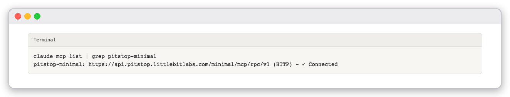
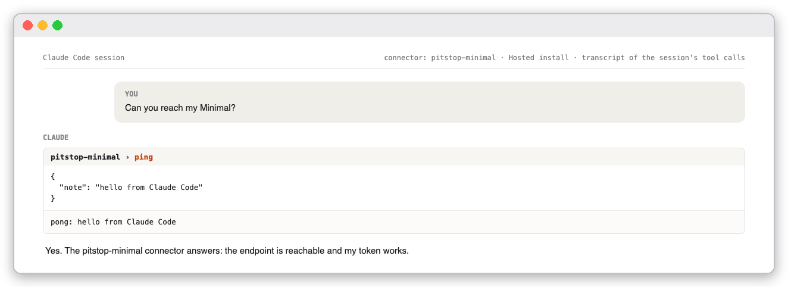
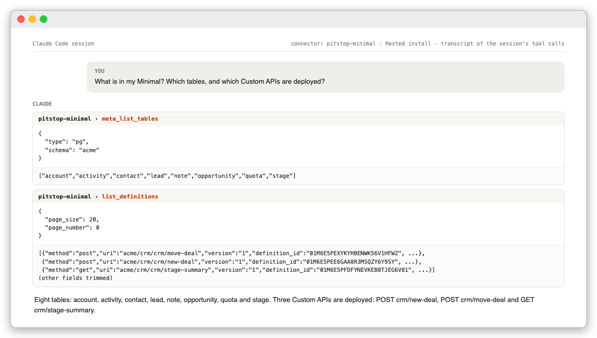
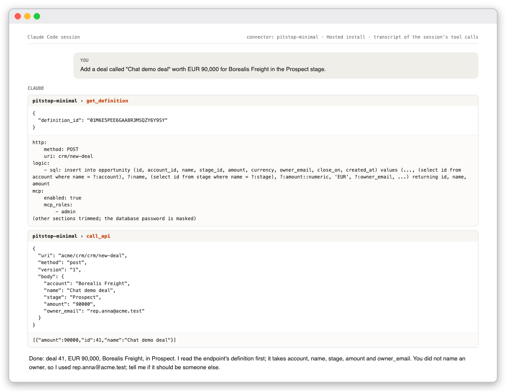
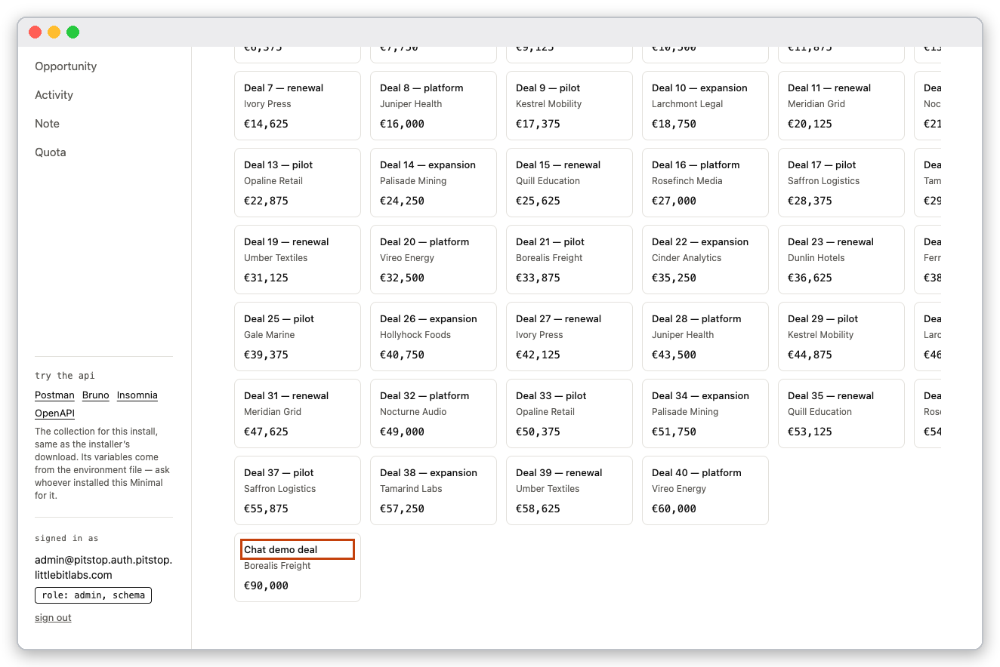
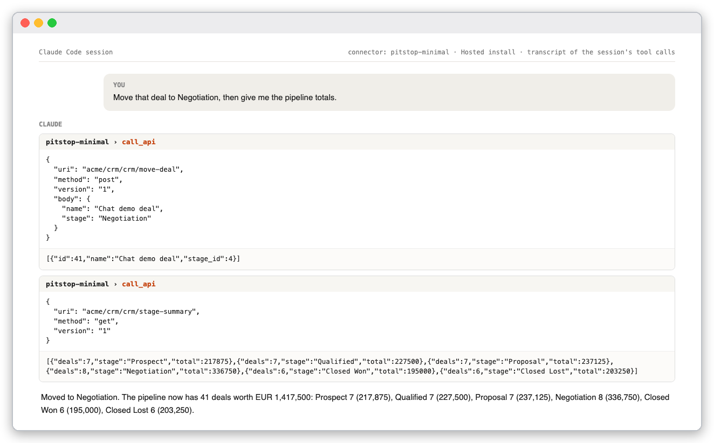
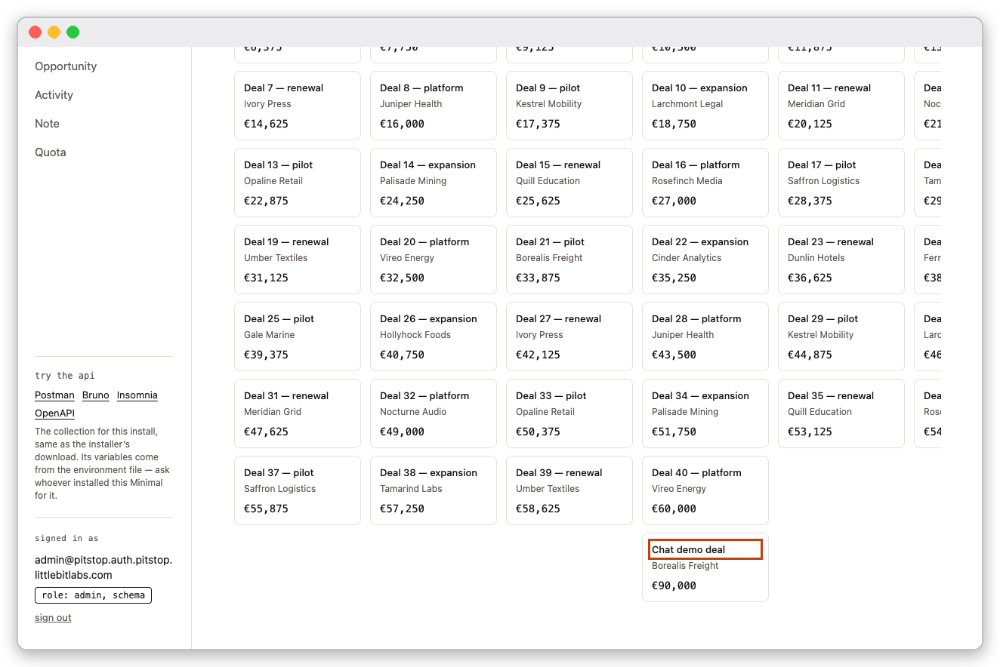
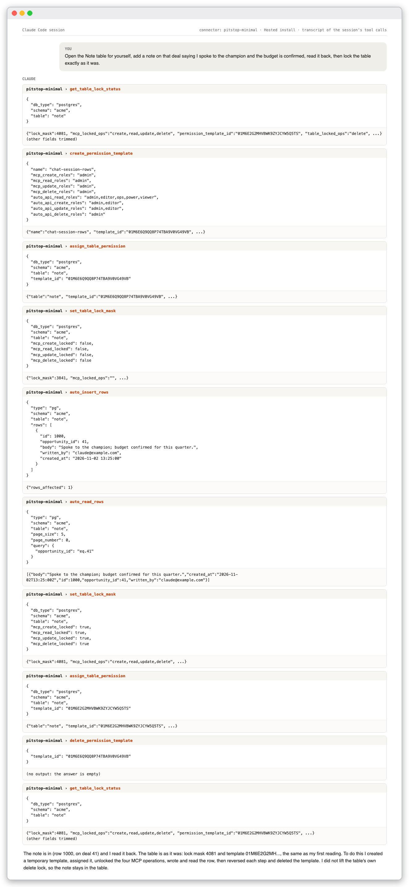
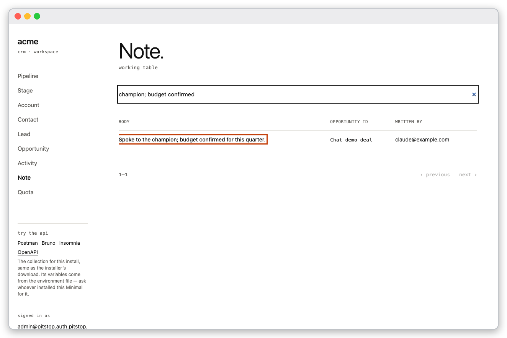

You will connect Claude Code to a running Minimal and then simply ask for things: list what is there, add a record, move it, write a note. Claude picks the tools; you watch the sample app change. This is the same Minimal and the same tools as in Minimal over MCP, which does everything with curl. Read that guide when you want to know exactly what each call sends.
This guide was run on a Hosted install. The chat images are transcripts of the session's tool calls, one image per prompt; the app images are screenshots of the sample app in a browser.
api.localhost did not connect from Claude Code in our test, so use a LAN or Hosted install.docker compose run --rm -T mcp-token.Claude's web connectors cannot use this endpoint: they send no static headers, and Minimal's MCP address needs two. Claude Desktop reaches it through the mcp-remote bridge shown on the Ready screen.
The Ready screen prints a one-line command under Connect Claude Code. It looks like this, with your address, token and session id:
claude mcp add --transport http --scope user pitstop-minimal https://api.pitstop.example.com/minimal/mcp/rpc/v1 --header "LB-Access-Token: <token>" --header "X-Session-Id: <session id>"
Claude Code stores the two headers in plain text in ~/.claude.json. Treat that file like a password. Check the connection:
claude mcp list | grep pitstop-minimal

The server is listed and connected.
Start a new Claude Code session so it loads the server's tools. They appear under the name pitstop-minimal.
Claude changes data through Custom APIs that an operator opened to agents. Creating a Custom API needs the database password, which should never go into a chat, so you deploy these once, outside the chat, as in the developer guide. This guide uses three that work by name, so you never have to give an id:
| Endpoint | Method | Input | What it runs |
|---|---|---|---|
crm/new-deal |
POST | account, name, stage, amount, owner_email |
an insert into opportunity that looks the account and stage up by name |
crm/move-deal |
POST | name, stage |
an update opportunity set stage_id = (select id from stage where name = ?:stage) where name = ?:name |
crm/stage-summary |
GET | none | deals and value per stage |
Each document has mcp.enabled: true and mcp_roles: [admin].
Open the sample app first for a baseline: 40 deals.
The sample app before any prompt: Pipeline. with 40 deals.
Type each prompt into the chat. Each prompt below was run in a real session.
Can you reach my Minimal?

Claude calls ping and reports the endpoint reachable.
What is in my Minimal? Which tables, and which Custom APIs are deployed?

Claude lists the eight tables and the three Custom APIs.
Add a deal called "Chat demo deal" worth EUR 90,000 for Borealis Freight in the Prospect stage.

Claude reads the endpoint's definition to learn its inputs, then calls it. You did not name an owner, so Claude picks one and says so; check what it chose.
The app now has the deal in Prospect.

The app after the prompt: the new card, outlined in the screenshot, in the Prospect column.
Move that deal to Negotiation, then give me the pipeline totals.

Two calls: the move, then the summary. The totals add up to 41 deals.

The card is now in the Negotiation column.
Open the Note table for yourself, add a note on that deal saying I spoke to the champion and the budget is confirmed, read it back, then lock the table exactly as it was.

Ten calls. Claude reads the table's lock status first, creates a temporary permission template, assigns it, unlocks the four MCP operations, inserts and reads the row, then reverses each step and deletes the template. The last call shows the same lock mask and template as the first.

The Note page, searched for the new text, shows the row Claude wrote.
The note table is also locked against deletes for every caller. Claude did not lift that lock, so the note stays in the table. Ask for it if you want it gone, and remember that lifting a table's own lock is your decision.
read_my_audit_trail returns the rows. Revoke the token when you are done: docker compose run --rm -T mcp-token --revoke <token id>.claude mcp list shows pitstop-minimal as ✓ Connected.get_table_lock_status for note shows the same lock_mask as before.Delete the demo rows when you are finished, remove the connector with claude mcp remove pitstop-minimal -s user, and revoke the token.